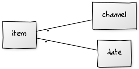

Approach¶
We start with some previously saved history, \(S_t\) for some time, \(t\). The base time, \(t=0\) will have an empty set of history, \(S_0 = \emptyset\). A blank slate.
Each day, we’re going to do three things.
- Get the daily RSS feed, we can call it \(D_t\) for some time, \(t > 0\). The idea is that \(t\) is monotonically increasing.
- Compare the daily feed with saved history to see what’s new. This is \(D_t - S_{t-1}\). It’s also \(D_t = \{d \in D_t \colon d \notin S_{t-1} \}\)
- Update the saved history. This is \(S_{t} = D_t \cup S_{t-1}\).
As a practical matter, the time parameter, \(t\), is the current day.
Core File Collection¶
We’ll need to save the data. We have two overall approaches to this
- Use one master file and keep updating that file.
- Use a collection of files on a daily basis.
The “One Master File” approach is appealing. You look in the file. You have the saved history and the recent changes. It’s awkward to debug and impossible to audit without a lot of additional information. This is the ideal for a highly-polished end-user-friendly desktop application. It’s – perhaps – a goal. Sadly, it’s not very simple to implement because intermediate state change information is lost.
The “Collection of Files” approach creates a lot of small files. While it’s bulky, it’s trivial to audit. There are a lot of simple files written using a number of simple rules.
The idea is this.
Each day will have a folder with a name that follows the YYYYMMDD pattern: 20180702 for example.
Inside each day’s unique folder, there will be three files:
20180702/daily.csvThis is the daily download of RSS data, parsed and saved as a CSV file. This is \(D_t\)20180702/new.csvThis is the items which are new. \(N_t = D_t - S_{t-1}\)20180702/saved.csvThis is the accumulated history of items seen so far. It’s built as \(S_{t} = D_t \cup S_{t-1}\) each day. It can also be thought of as \(S_{t} = \bigcup_t D_t\), the union of all previous daily files.
The naming pattern of year-month-day is easy to visualize and reasonably popular.
A common alternative is to use year-week-dow: 2018271 is the 2018, 27th week, 1st day. This
makes it easier to clean out files that are over a week old and no longer useful for debugging
or audit purposes.
Multiple Dimensions¶
The focus above is on comparing a – single – daily extract with history. The file paths reflect date and state on a given date.
The user story emphasizes multiple feeds. This leads to the following understanding of the data:
A given item has two parents: the date and the RSS channel it came from. The two parents are independent dimensions – there’s no inherent hierarchical relationship between them.
The OS file system, however, is hierarchical, forcing us to impose an arbitrary relationship between channels and dates. There are two choices.
channel / date / *.csvEach channel folder has a long string of date-based folders. Within each date’s folder are the relevant files. This makes it easy to see evolution of data within a channel.date / channel / *.csvEach date has a collection of channel folders. Within each channel folder are the files for the given date and channel combination. This makes it easier to overview all channels on a given date.
The “date-on-top” organization makes cleanup easier. Removing all files from the previous month (or previous week if using year-week-day) is trivial.
The “channel-on-top” organization makes cleanup awkward because each channel must be cleaned separately.
Which Date?¶
We have an interesting question regarding the applicable date for our files.
Each RSS channel has a lastBuildDate tag with a time stamp for the RSS content.
Which date do we use?
- The date we ran our software?
- The date provided in the RSS feed?
If we use the RSS date, and an RSS feed is stale, we’ll tend to overwrite the same file with old data. There won’t be any easy way to check for staleness, though, because our application will overwrite an old file with old data. We can check the OS last-modified-date to see if we’re overwriting old files.
If we use the date we actually run our software, we’ll see that the file isn’t changing.
A file with a name like 20180702/channel/new.csv will have reflect when we gathered the data. The content
of the file may match the file from 20180701/channel/new.csv showing that the feed is stale.